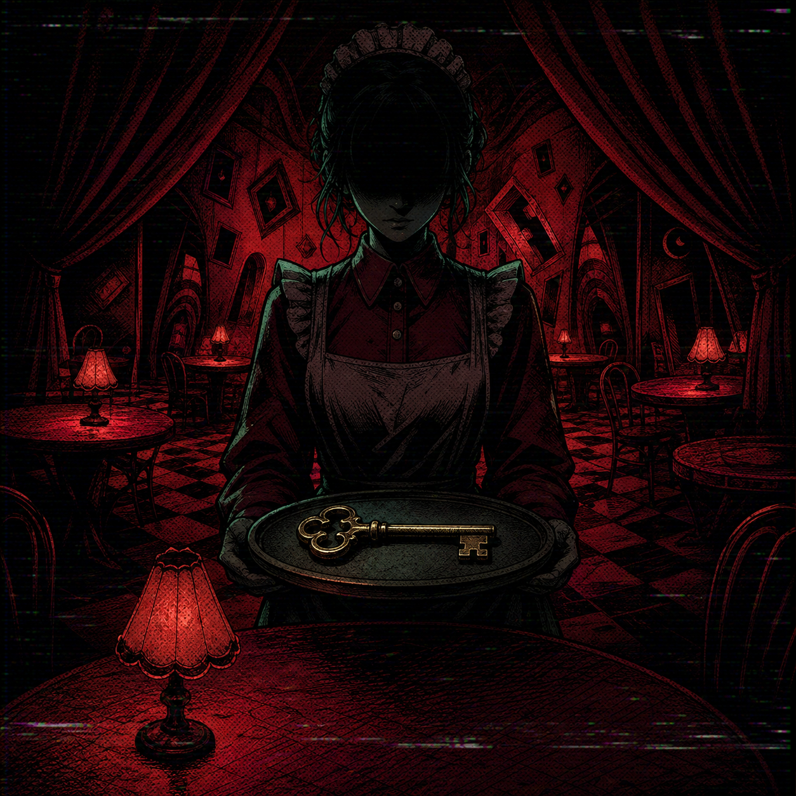
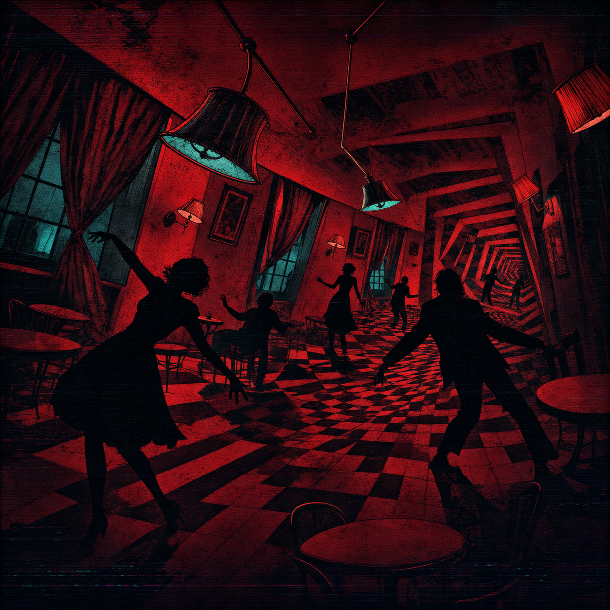
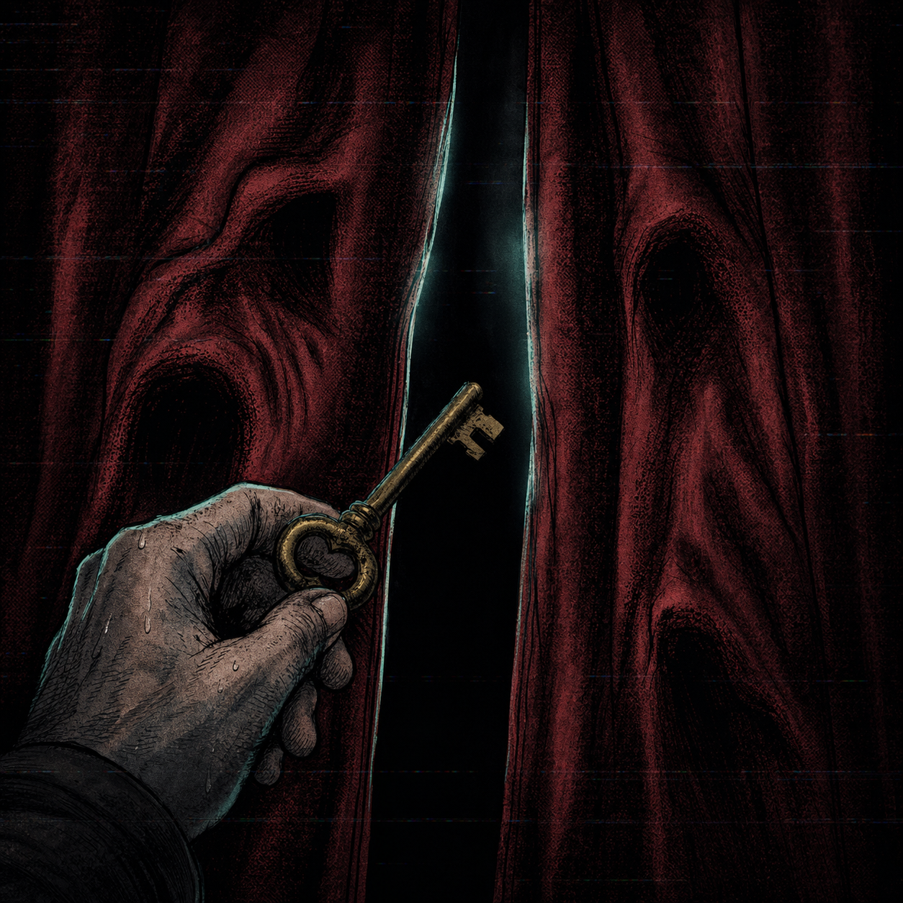

Официантка
Избегайте прямого зрительного контакта. Установлено, что она несанкционированно распространяет мастер-ключи доступа (серия 312). Перехват ключей невозможен.
Этот адрес зарезервирован для персонала. Вернитесь к гостевой странице кафе.
Открыть «Красную Комнату»Данная зона не является разработкой корпорации «Детский Жир». Это пространственный глитч, возникающий на стыке реальностей. В случае попадания сырья в эту зону, стандартный протокол экстракции приостанавливается.



Избегайте прямого зрительного контакта. Установлено, что она несанкционированно распространяет мастер-ключи доступа (серия 312). Перехват ключей невозможен.
Если в зале меняется освещение и начинается танец — замрите. Не пытайтесь прервать цикл.
Барьер между системой и внешним миром истончен в зоне красных портьер. Если субъект завладеет ключом и шагнет за штору, мы потеряем над ним контроль.
Не пытайтесь закрыть это кафе. Наша задача — просто следить за тем, чтобы гости не находили нужную штору.